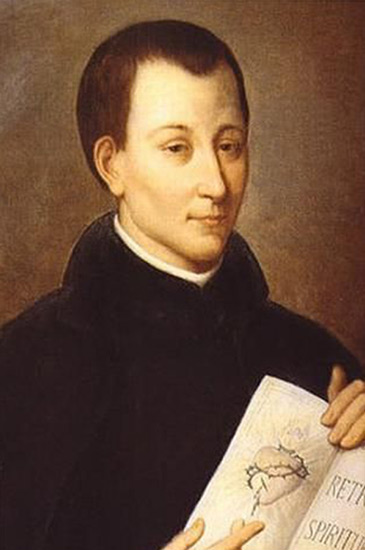
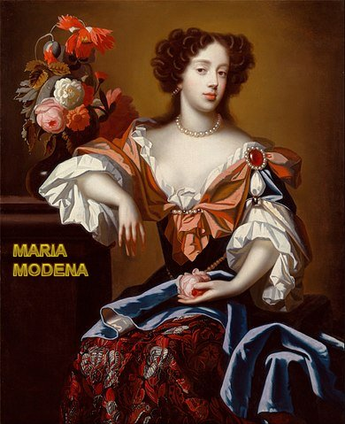
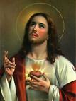
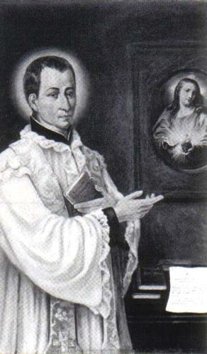
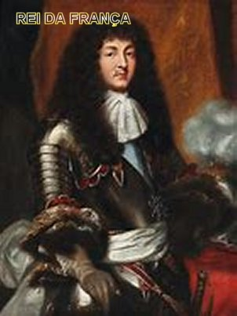
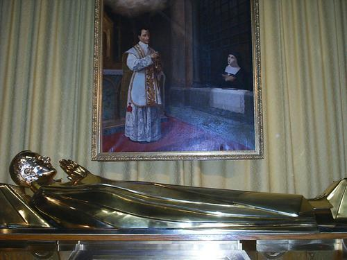

MISSóO INGRATA
EM LONDRES NA INGLATERRA
Quando estava no auge de suas atividades em Paray-le-Monial, Padre Clàudio de La Colombire recebeu ordem de seu superior hierrquico na Frana, mandando que ele fosse para Londres, imediatamente, a fim de ser Capelào da Duquesa de York, senhora Maria de Modena, que era catélica fervorosa, mas que só consentiria em se casar com o Duque, irmo de Carlos II, Rei da Inglaterra, somente depois de ser autorizada pelo Governo Inglàs a ter sempre um Sacerdote Catélico junto dela. Como se tratava de assunto que envolvia os Governos de dois pases: Inglaterra e Frana, que buscavam objetivamente melhorar os entendimentos e transaes, não houve contatos preliminares eliminando arestas ou sugerindo reparos.



Padre Clàudio + Mary Modena - Duquesa de York + Andr Duque de York - Esposo de Mary + Carlos II (irmo de Andr) Rei da Inglaterra

A BONDADE DIVINA ACONSELHOU
Por meio da Santa Vidente, Irm Margarida Maria,NOSSO SENHOR JESUS CRISTO" recomendou ao Padre Clàudio algumas atitudes a serem observadas em sua nova missão na Inglaterra:Não se assustar com a investida dos infernos contra o seu carisma para atrair as almas, mas confiar inteiramente na bondade de DEUS, pois será ELE o seu sustentculo; usar de doùura e compaixo para com os pecadores; ter o cuidado de nunca separar o bem de sua fonte.
Sua partida, como bem compreensóvel, foi muito dolorosa e sentida pela Irm Margarida Maria e muitas outras pessoas do Mosteiro da Visitao, que juntos trabalhavam para a continuidade da divulgao da devoção ao SAGRADO CORAÇÃO DE JESUS.
INSTALADO NO PALCIO
De sua parte, Padre Clàudio permaneceu
absolutamente fiel aos seus votos e propésitos feitos por ocasio da Terceira Provaoù quando
foi ordenado

UNINDO OS CRISTOS
Todavia, com sua natural habilidade, converteu diversas famÉlias inglesas ao cristianismo, e inclusive, atraiu para a vida consagrada muitos membros da aristocracia londrina. Inclusive, alguns, ele os encaminhou para instituies religiosas na Frana; outros, os reuniu em Londres mesmo, num Mosteiro clandestino fundado por ele, prximo a Catedral de São Paulo, no centro de Londres.
E assim, no ano 1674 o Padre Clàudio já celebrava Missas numa Capelinha no centro de Londres. Por isso, acabou passando a ser procurado por inúmeros cristos clandestinos: Padres exilados, Freiras, religiosos. Todos vinham, aflitos, ansiosos por ouvir os seus conselhos. Ali, Padre Clàudio Colombire alimentou a fé dos cristos perseguidos e os encorajou a perseverarem dando-lhes grande conforto espiritual.
A TERRVEL MENTIRA
Mas foi nesta poca que um tal de Titus Oates, figura suspeita que frequentava o ambiente criminoso, teceu uma terrvel intriga, por causa da proteção que o

Padre Clàudio dava aos cristos, acusando injustamente os Jesutas e outros membros da Igreja Catélica de estarem tramando o assassinato do Rei da Inglaterra Carlos II, a fim de substitu-lo pelo seu irmo Duque de York, que foi convertido ao cristianismo. Como já mencionamos, o Duque de York era o marido da Duquesa de York, senhora Maria de Mdena de quem o Padre Clàudio era o Capelào. Embora o prprio Rei da Inglaterra, Carlos II, não acreditasse, considerando absurda aquela denncia e sem fundamento, aconteceram diversas e violentas perseguies contra os catélicos, injustamente acusados de participarem do denominado complà papista.Este complà era um movimento constitudo por adversórios polàticos, para eliminar o Rei da Inglaterra Carlos II. E mais, a pretexto de tais acontecimentos, embora não houvesse nenhuma prova testemunhal, o Padre Clàudio foi denunciado e encarcerado pelo crime de proselitismo religioso (partidário de uma religio diferente do protestantismo, que era a religio oficial). Cumpria-se desse modo, uma premonio (uma sensao ou advertncia antecipada que ele teve logo que chegou a Londres; uma espécie de pressentimento), semelhante a um outro pressentimento ocorrido h quatro anos antes, quando mentalmente se viu coberto de ferros e correntes, sendo arrastado para uma prisão, acusado e condenado por ter divulgado em homilias e discursos, a abominvel traio que crucificou JESUS CRISTO.
A verdade que o Padre Claudio sendo completamente inocente, foi injusta e covardemente condenado e lanado numa enxovia (crcere subterrneo, escuro, mido e sujo), embora já se encontrasse com a saúde debilitada por uma tuberculose incipiente que o clima mido de Londres lhe havia proporcionado. Naquele local, se permanecesse teria morrido em pouco tempo. Mas a Providáncia Divina não permitiu... Os fatos foram levados a presena do Rei da Frana Luis XIV, que no mesmo momento escreveu e enviou uma missiva urgente a Carlos II, o Rei da Inglaterra. O Rei Carlos II, que não estava a par daquela prisão, mandou libertar o Padre Clàudio de imediato e lhe concedeu liberdade para viajar em seguida, para Paris.
Chegou a Frana quase sem foras, hospedou-se na residáncia de Sacerdotes Jesutas, da mesma Ordem Religiosa. Estes fatos ocorreram em meados de 1679.
Depois de recuperar um pouco a saúde, dirigiu-se para o Colàgio da SANTSSIMA TRINDADE na cidade de Lyon, onde no passado ele fez os seus primeiros estudos de Humanidades, e também, onde naquela poca, assumiu o cargo de Diretor espiritual dos alunos de Filosofia. Ento, era um local onde possua amigos e simpatizantes. Embora atualmente estivesse fisicamente muito desgastado, não deixou de propagar a Devoção ao DIVINO E SAGRADO CORAÇÃO DE JESUS defendendo-o contra os inúmeros ataques de pessoas mal informadas e esclarecendo todas as injustas e absurdas incompreensóes.

No inverno de 1681, Padre Clàudio retornou a Paray-le-Monial, cujo clima parecia ser mais benfico para a sua saúde. Porm, là chegando, por causa do intenso frio daquela rigorosa estao, pensou-se em conduzi-lo para Vienne, onde ficaria em convalescncia aos cuidados de seu irmo, Arcediago daquela Diocese. Mas o Superior de Paray-le-Monial mandou que ele não viajasse, apés ter chegado um bilhete escrito pela Irm Margarida Maria Alacoque que transmitia ao Padre Clàudio um recado de NOSSO SENHOR JESUS CRISTO: ELE me disse que quer o sacrifécio da sua vida aqui, em Paray-le-Monialà.
A vida de Padre Clàudio verdadeiramente já estava no fim. No dia 15 de Fevereiro de 1682, com 41 anos de idade, Clàudio de La Colombire foi se encontrar finalmente com AQUELE de quem fora servo fiel e amigo perfeito e dedicado neste nosso mundo. Algumas horas depois dos funerais, Irm Margarida Maria de Alacoque, cujo coração estava unido ao coração do Padre Clàudio de La Colombire, no Interior do CORAÇÃO SANTSSIMO E SAGRADO DE JESUS pode fazer uma alegre recomendao: Agora podem invoc-lo com tranquilidade e confiana por que ele pode interceder por nós junto a DEUSó.
SOLENIDADE DO SAGRADO CORAÇÃO DE JESUS
No dia 8 de Maio de 1928, o Papa Pio XI assinou o longo processo que depois do mesmo ter percorrido todos os canais de direito, como normalmente acontece, foi elevado a suprema Categoria Litrgica: SOLENIDADE DO SAGRADO CORAÇÃO DE JESUS atravós da Encclica Miserentissimus Redemptor.
BEATIFICAO E CANONIZAO
Em 1929 o PADRE CLUDIO DE LA COLOMBIRE foi BEATIFICADO pelo Papa Pio XI, no Vaticano. E no dia 31 de Maio de 1992, o PADRE CLUDIO foi CANONIZADO pelo Papa João Paulo II, também no Vaticano.